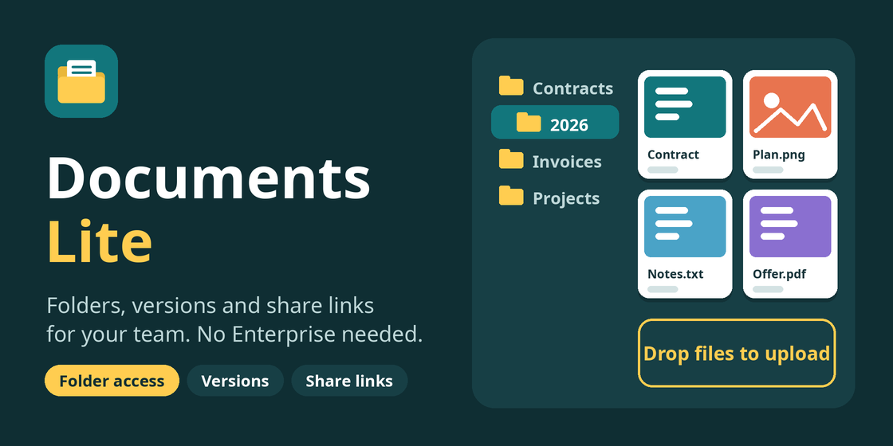
Drop files into a folder tree, tag and find them in seconds, keep every version, link them to any record and send expiring download links. Access is set per folder, for users and groups, and enforced on the server.
Folder accessDrag and dropVersion historyShare linksAuto-filingFree
No configuration needed: every internal user can use Documents right after install.
Build the tree and, where it matters, add a rule: only these users and groups, read or read and write. Sub-folders inherit it.
Drag several files onto the page or click Upload. They land in the folder you selected, with a thumbnail and a preview.
Link a file to a customer, send an expiring download link, or ask a colleague for a missing document.
Read or read and write per user or group, inherited by sub-folders and enforced by record rules, so lists, search, previews and downloads all respect it. Administrators see everything.
Drop many files at once onto the kanban or list, or use the Upload button. Files go to the folder selected in the side panel.
Image thumbnails, file type icons, tags and uploader on every card, plus a sortable list view and a folder and tag side panel with counters.
Open images, PDF, text, audio and video in the viewer, or read a PDF right inside the document form.
Search the name, tags and description, or the text inside text files, PDF, Word and spreadsheet documents. Filter by type, uploader and status.
Replacing a file keeps the old one. Download any version or restore it with one click; the file you replace is kept too.
Attach a document to a contact, product, sale, purchase, project, task, lead, invoice or employee. The Documents button shows up on those forms when the app is installed, with a counter.
Send a public download link with an expiry date, a download limit and an optional password. Revoke it any time; every download is counted and noted on the document.
Ask a colleague for a file. They get an activity, upload it from the request, and it is filed in the folder you picked.
File a copy of new chatter attachments automatically: pick the record type, an optional file name pattern or file type, the folder and tags.
A banner tells you when another document has exactly the same file, with one click to see them.
Nothing is ever deleted: Disable hides a document from Viewers, and Admins find it with the Disabled filter and enable it again.
No Enterprise dependency and no extra Python packages. Own models, so it can sit next to Enterprise Documents without clashing.
Extra marks tools that go beyond a basic document manager.
| Feature | This app | Typical alternatives |
|---|---|---|
| Folder access per user and group | Yes, inherited, server-side rules | Basic read and manage groups |
| Multi-file drag and drop upload | Yes | Yes |
| Thumbnails and preview | Images, PDF, text, audio, video | Partly |
| Version history with restore | Yes | No |
| Share links | Expiry, download limit, password, counter | Plain link or none |
| Search inside file contents | Text, PDF, Word, spreadsheets | Name only |
| Auto-file chatter attachments | Rules by record, name and type | No |
| Request a document | Activity and upload form | Sometimes |
| Duplicate detection | Yes | No |
| Extra Python packages | None | Sometimes required |
A demo database with fictional companies.
Folders and tags on the left, cards with thumbnails, file type, tags and uploader.
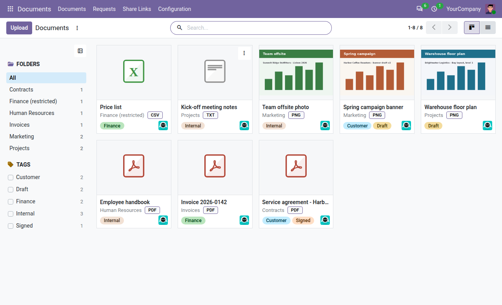
Drag several files over the page and let go: they upload into the selected folder.
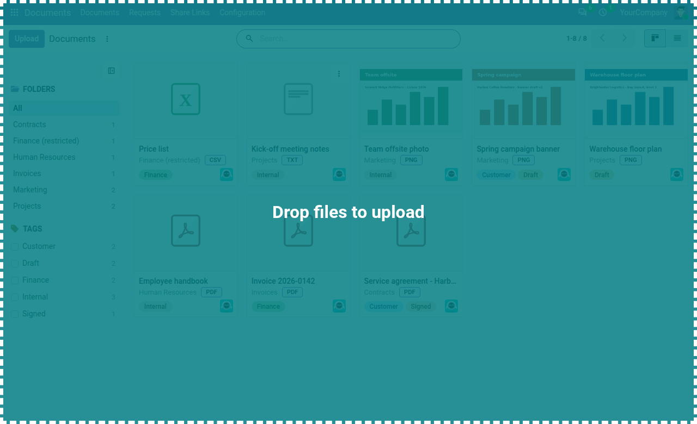
Images, PDF, text, audio and video open in one click.
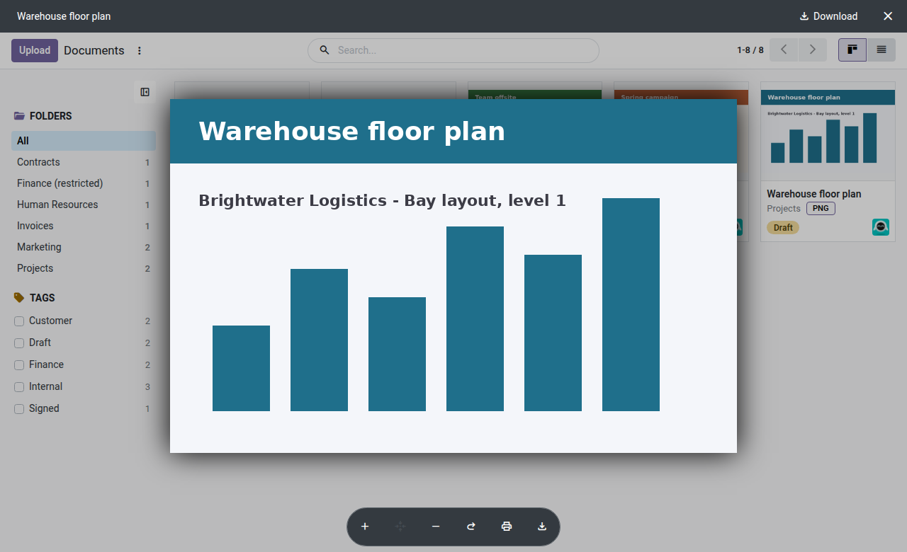
Type a phrase and search the content of PDF, Word, spreadsheet and text files.
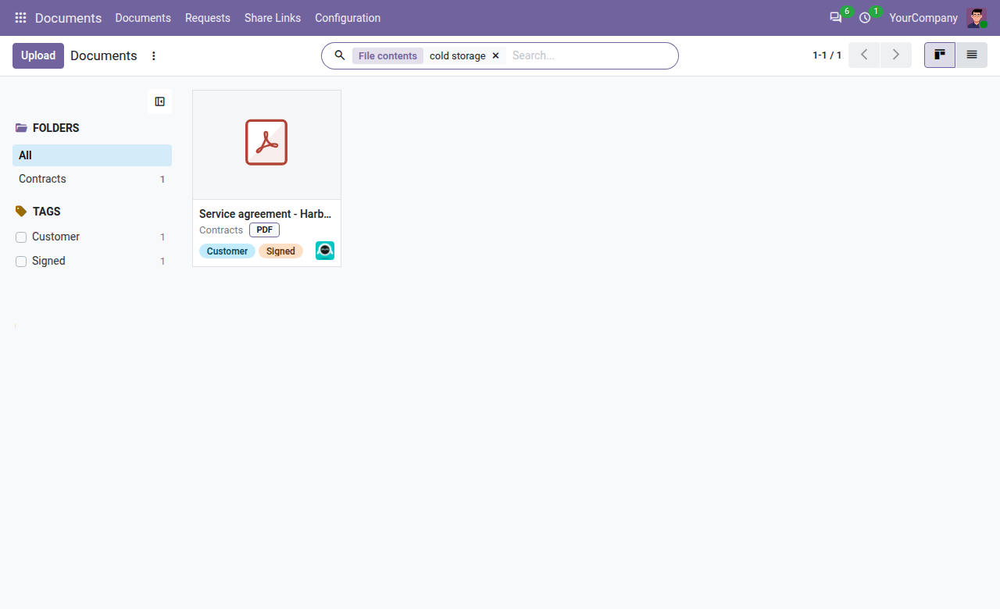
A sortable list with type, size, version, linked record and uploader.
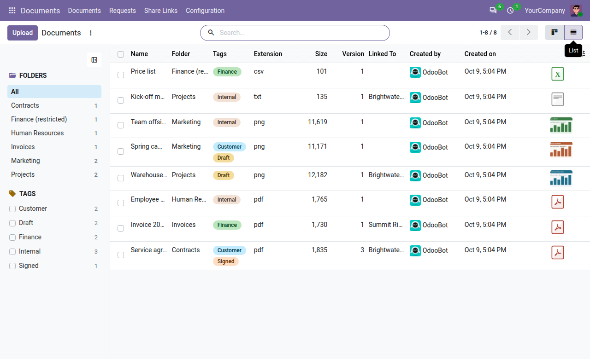
The document form shows a preview tab, tags, folder, size and the smart buttons.
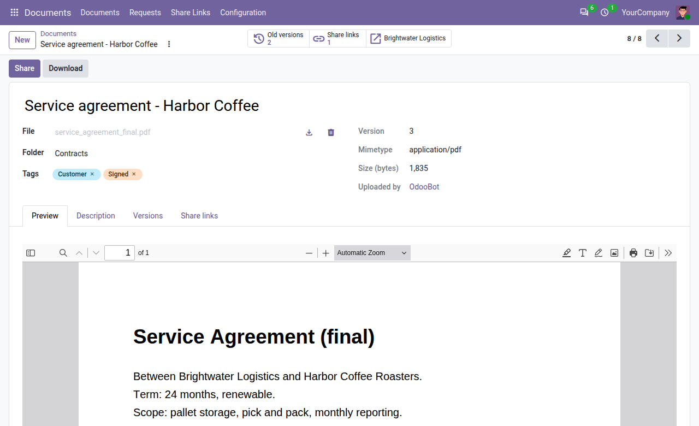
Replaced files are listed with who replaced them and when. Download or restore any of them.
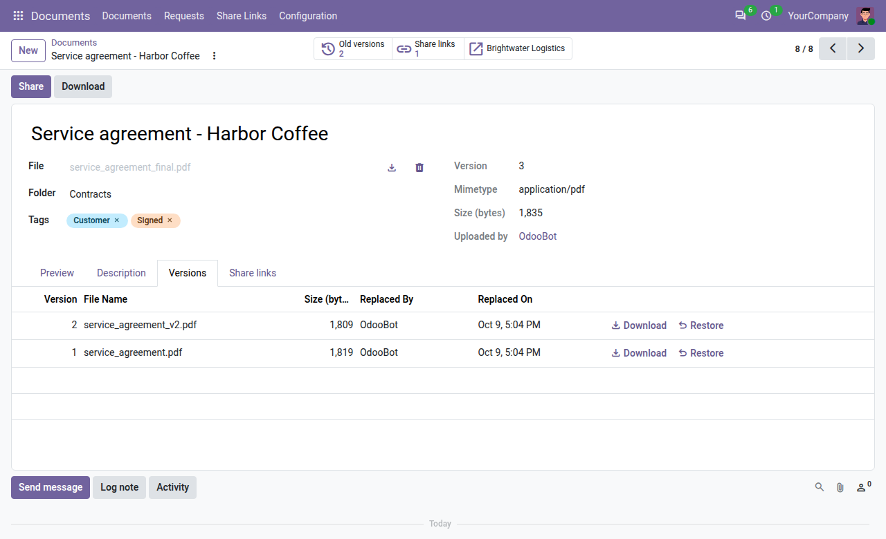
Add users and groups with read or read and write. Sub-folders inherit the rules.
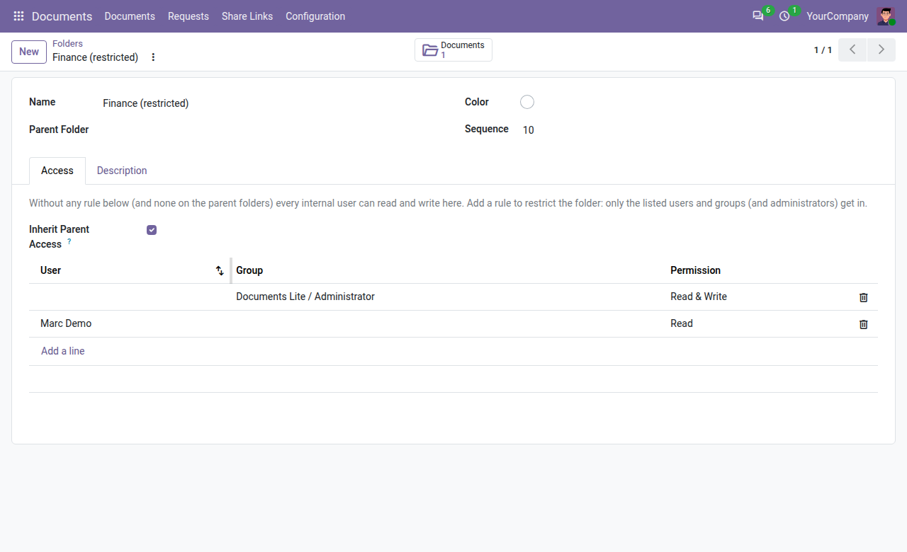
Expiry date, download limit, password and the link to copy.
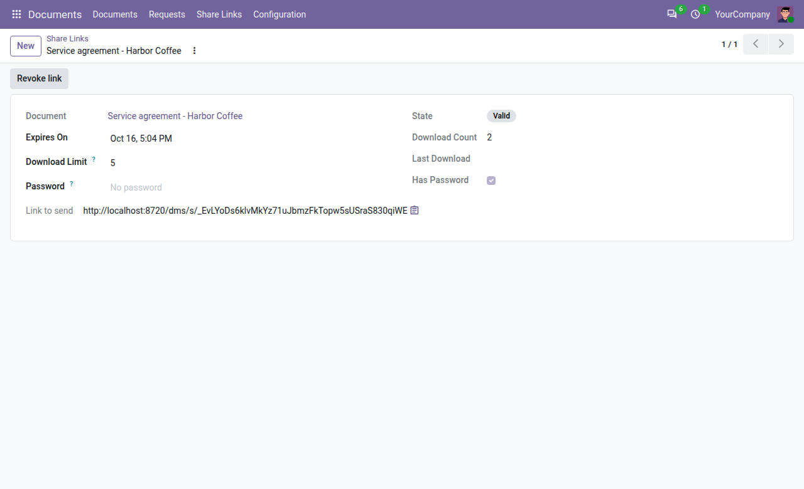
A clean page with a Download button, and a password field when you set one.
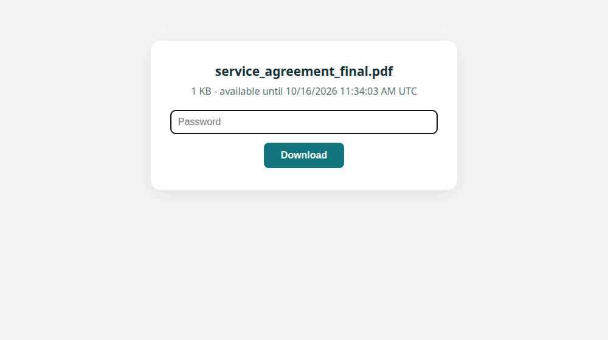
Ask a colleague, follow the status, and the upload lands in the right folder.
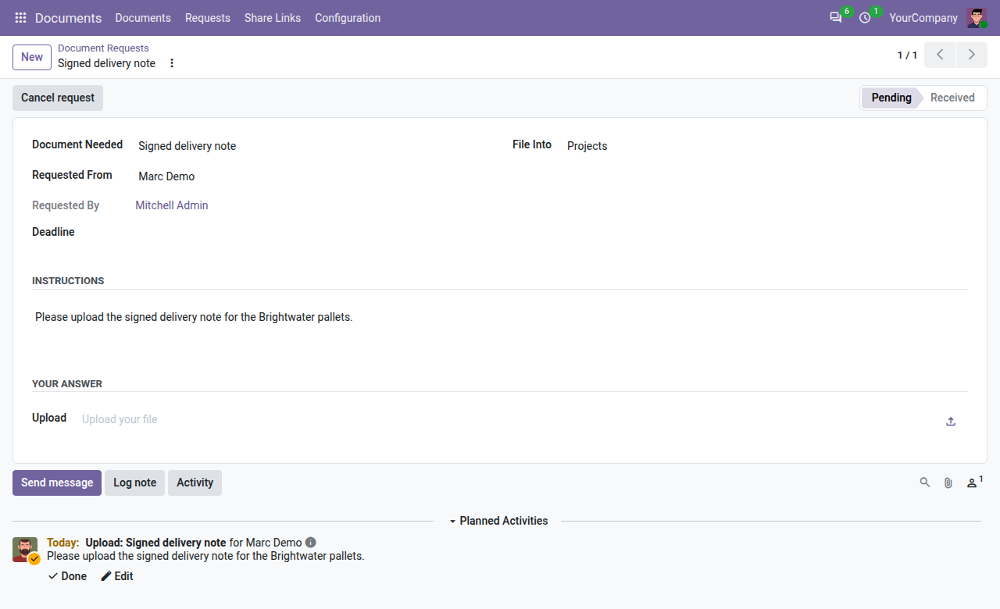
Choose the record type, an optional file name pattern and file type, the folder and tags.
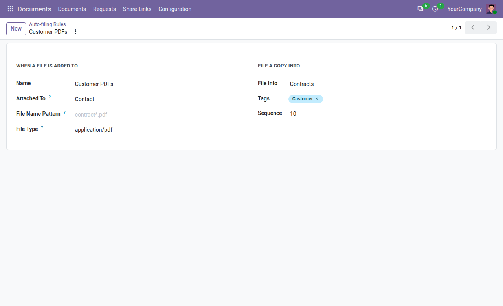
A counter and a one-click list of the documents linked to the record.
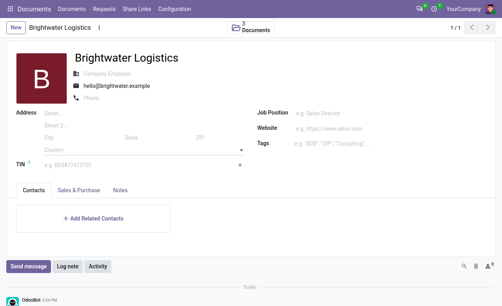
Drop files here to attach them straight to the contact.
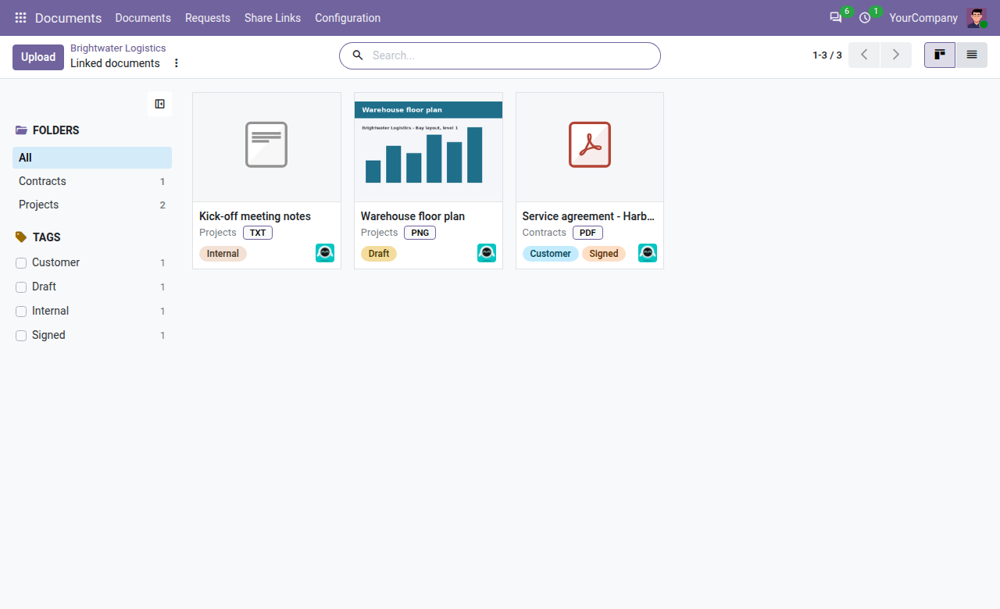
Everyone with an internal user account, until you add an access rule. Once a folder (or a parent) has a rule, only the listed users and groups and Documents administrators can open it. The same applies to the documents inside, their versions, previews and downloads.
Yes. By default it inherits the parent rules and you can add more. Untick Inherit Parent Access to start from scratch.
Each link has a long random token that cannot be guessed. It stops working at the expiry date, after the download limit, or when you revoke it. A password is optional and stored hashed. The page only offers a download.
Text files always; PDF, Word, spreadsheet and presentation files when the server has the pdfminer library (PDF) installed, which most installations do.
Nothing: it stays in the chatter. A copy is filed in Documents, linked to the same record, and the same attachment is never filed twice.
Yes. It uses its own models and menus, so both can run side by side.
Yes, that is what it is made for. It needs only Discuss and the attachment indexing module that ships with every database.
A question about folder access, or something your team needs on top? Viyug Infotech will get back to you.
Email support: support@viyuginfotech.com
Website: viyuginfotech.com